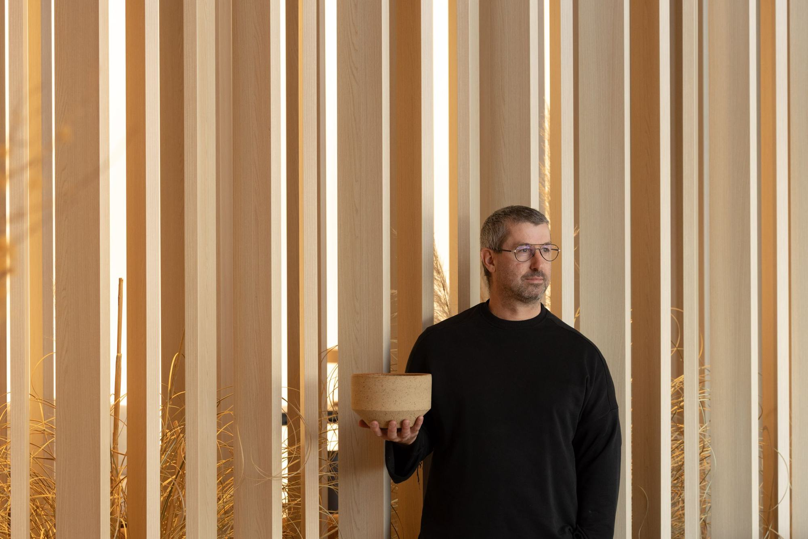
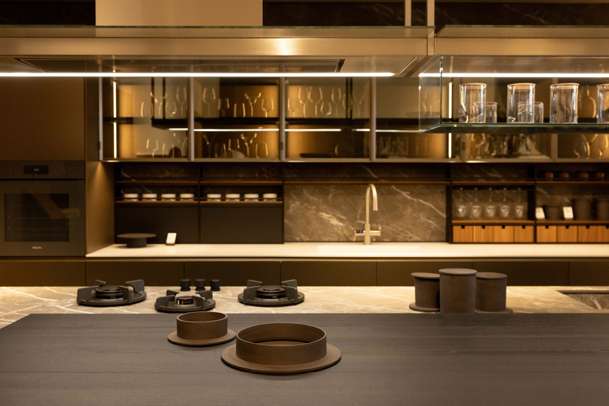
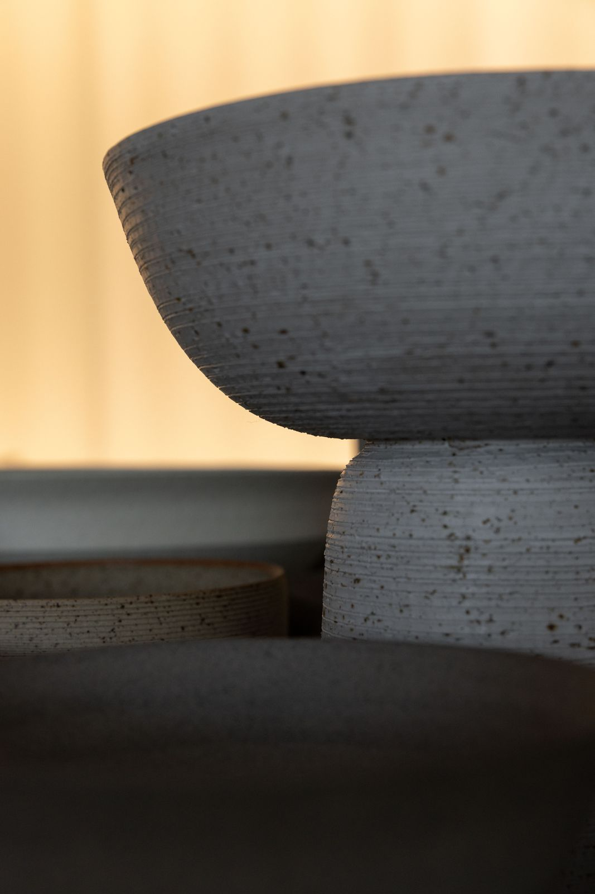
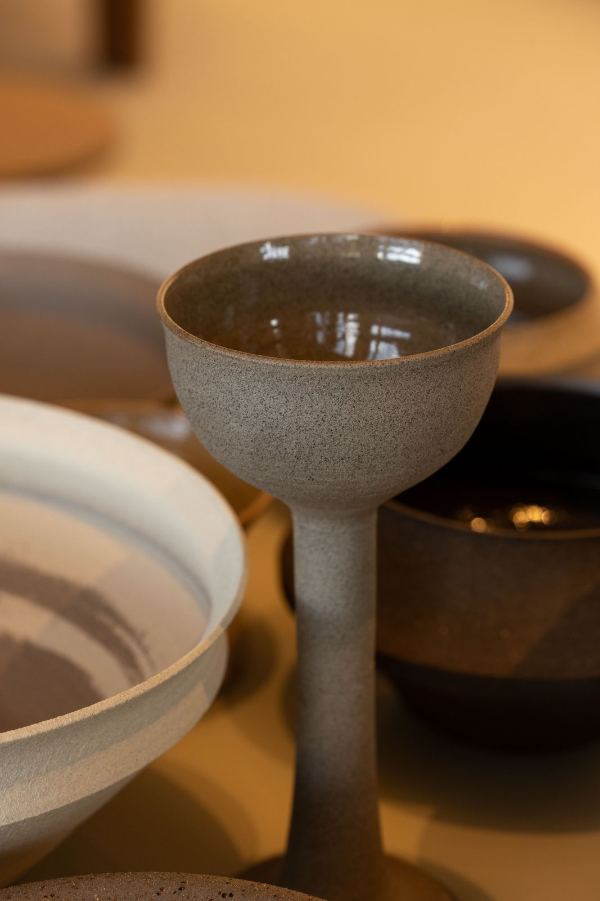
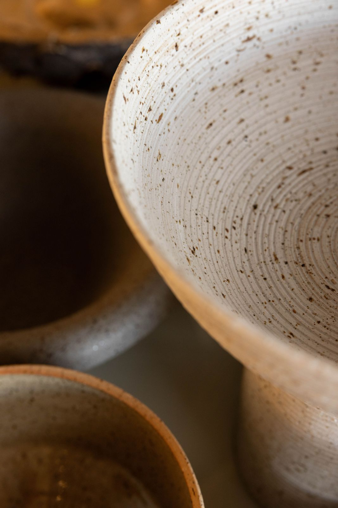
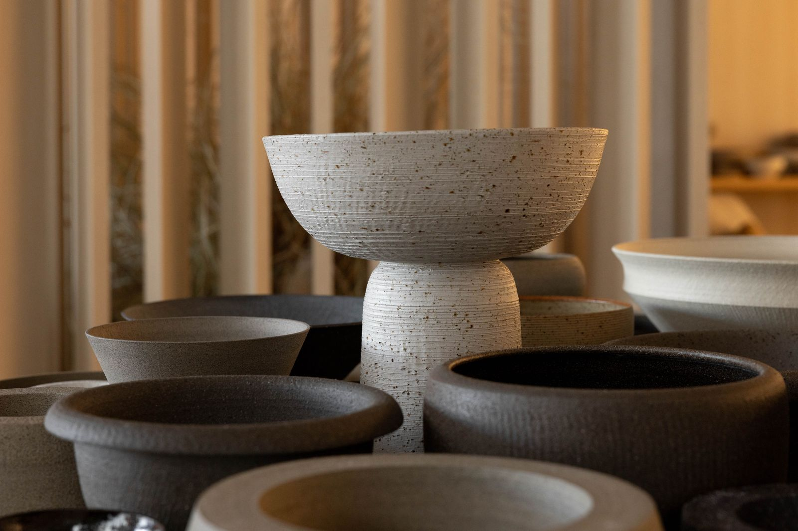
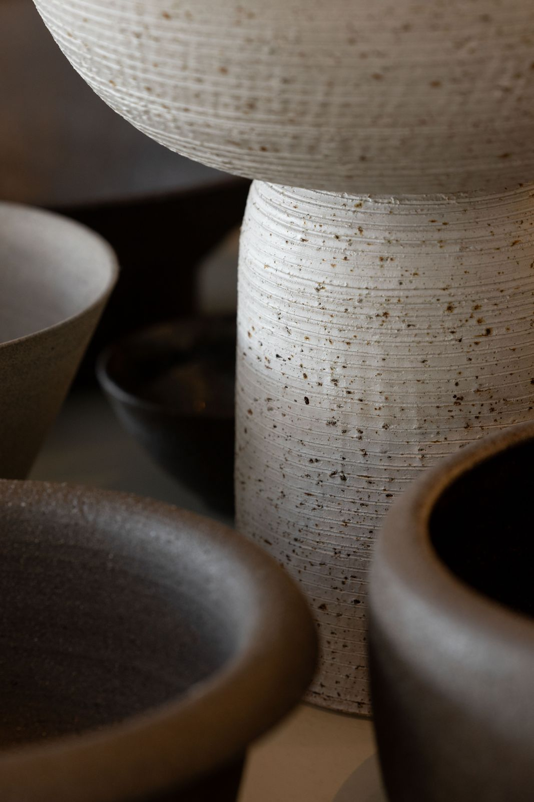
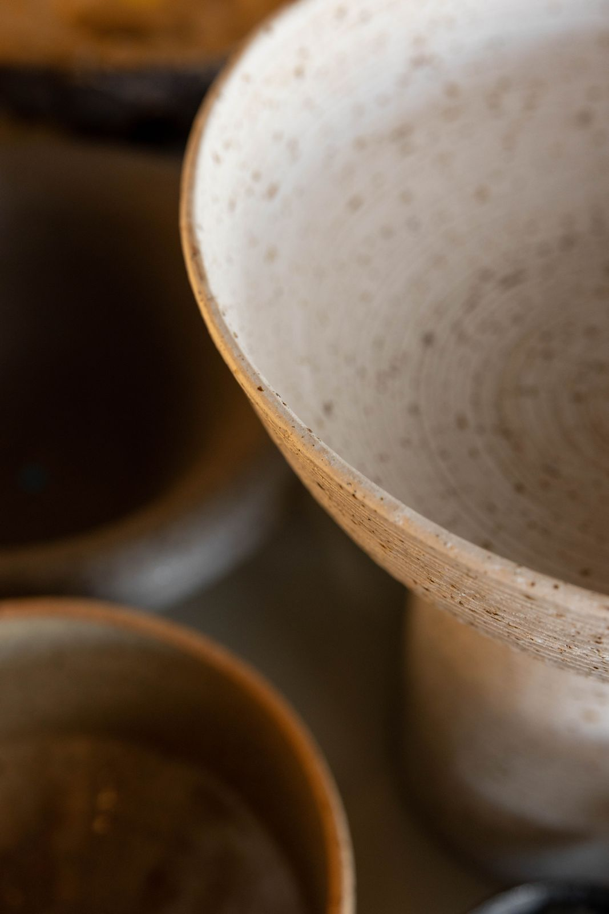
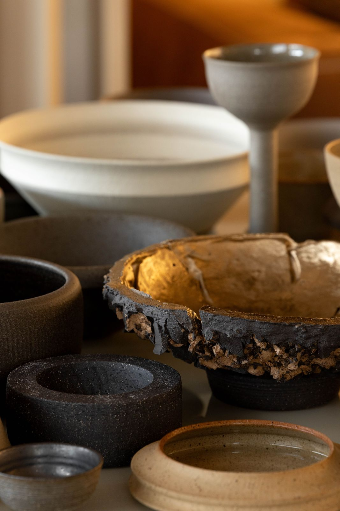

Spencer throws stoneware and porcelain in small batches, signing each piece by hand. The work keeps the record of how it was made.
Small movement at the rim; depth in the glaze where the flame caught. The marks of the making, quietly left in.




New Zealand-born and Auckland-based, I work between New Zealand and Australia.
For over twenty years I worked in interior design — residential projects across Australia and New Zealand — and in furniture, in Australia and Singapore. For the last six years I've worked in clay, designing and making collections for private clients and international houses, among them Aesop.
Ceramics and interior design share the same concerns for me: material, colour, texture — objects of beauty and simplicity, made for the spaces we live in.
Working with clay lets me make with my hands and bring a designer's eye to the medium. It has brought an enormous amount of joy — always something new to learn, and to share.


